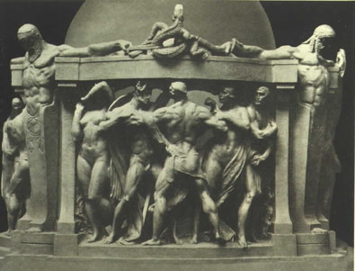

|  |
|
Robert I. Aitken, Survival of the Fittest, from the
Fountain of the Earth (model). Court of Abundance, Panama-Pacific
International Exposition, San Francisco, 1915. From: Stella
G.S. Perry, The Sculpture and Mural Decorations of the
Exposition, with an Introduction by A. Stirling Calder
(San Francisco: Paul Elder and Company, 1915).
|